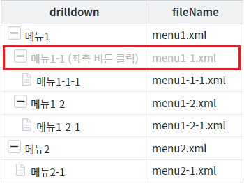
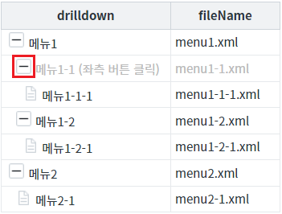
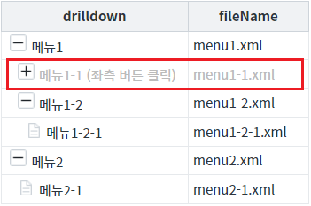
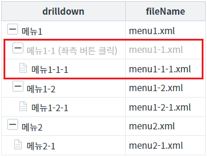
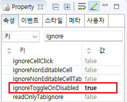

GridView의 속성 'ignoreToggleOnDisabled' 설정 비교 예제입니다. 이 속성은 컬럼의 속성 'inputType'의 설정 값이 'drilldown'인 셀에 'disabled'이 적용되고, 해당 셀에 표시된 '확장/축소' 버튼이 클릭되었을 때 동작합니다.
속성의 설정 값에 따른 동작은 다음과 같습니다.
true : 셀이 비활성화되면 확장, 축소 기능이 동작하지 않습니다. 셀의 비활성화 여부에 따라 기능이 적용됩니다.
false : (기본 값) 셀의 비활성화 여부와 상관없이 확장, 축소 기능이 항상 동작합니다.
셀의 'disabeld' 적용 여부와 상관없이 버튼 '확장/축소'의 기능 활성화
셀에 'disabeld'이 적용되면 버튼 '확장/축소'의 기능 비활성화
STEP 1. 초기 상태를 확인합니다.
GridView의 첫 번째 컬럼의 속성 'inputType'이 'drilldown'으로 설정되어있고, 두 번째 로우에 'disabled'가 적용되어 있습니다.
그림 1.브라우저(Chrome) 실행 예시

STEP 2. 버튼 '확장/축소' 클릭하기
영역 '(기본 설정) 셀의 'disabeld' 적용 여부와 상관없이 버튼 '확장/축소'의 기능 활성화'에 구성된 GridView에서 테스트합니다.
두 번째 로우(행)의 컬럼(열) 'drilldown'에 출력된 버튼을 클릭합니다.그림 2.브라우저(Chrome) 실행 예시

STEP 3. 실행된 결과를 확인합니다.
하위 로우가 축소됩니다.
그림 3.브라우저(Chrome) 실행 예시 - GridVeiw

STEP 1. 초기 상태를 확인합니다.
GridView의 첫 번째 컬럼의 속성 'inputType'이 'drilldown'으로 설정되어있고, 두 번째 로우에 'disabled'가 적용되어 있습니다.
그림 4.브라우저(Chrome) 실행 예시
STEP 2. 버튼 '확장/축소' 클릭하기
영역 '(기본 설정) 셀의 'disabeld' 적용 여부와 상관없이 버튼 '확장/축소'의 기능 활성화'에 구성된 GridView에서 테스트합니다.
두 번째 로우(행)의 컬럼(열) 'drilldown'에 출력된 버튼을 클릭합니다.그림 5.브라우저(Chrome) 실행 예시
STEP 3. 실행된 결과를 확인합니다.
'확장/축소' 기능이 동작하지 않습니다.
그림 6.브라우저(Chrome) 실행 예시 - GridVeiw

STEP 1. GridView의 속성을 지정합니다.
[필수] ignoreToggleOnDisabled="true"
그림 7.웹스퀘어5 SP5 스튜디오의 Property View(속성창) 예시

소스 본문
<!-- GridView 본문 예시 --> <w2:gridView ignoreToggleOnDisabled="true" id="grd_exam2"> <!-- 중략 --> </w2:gridView>
ignoreToggleOnDisabled
[웹스퀘어5 SP5 개발 가이드] GridView
링크 : https://docs1.inswave.com/sp5_user_guide/86bdcf48029b958b